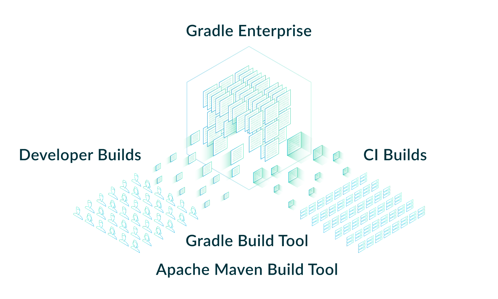

speaker {
name = "Louis Jacomet"
company = "Gradle"
joined = 2018
position = "Support Team Lead"
previously = "Dependency Management, JVM"
past = listOf(
"Terracotta / Ehcache" in 2013,
"Devoxx Belgium Committee" in 2012,
"Contractor" in 2002,
"Java 'Hello, World!'" in 1997
)
failures = generateSequence(code) { bugs }
twitter = "@ljacomet"
github = "ljacomet"
extra = "Not fully figured out how to stay out of management !?!"
}Donnez de l’amour à votre build, il vous le rendra ! ❤️
Louis Jacomet & Paul Merlin
Agenda
Qu’est-ce que Gradle ?
Fonctionnalités JVM
Logique de build
Structure de build(s)
Performance
Roadmap
Qui sommes nous ?
🧑💻 🧑💻

speaker {
name = "Paul Merlin"
company = "Gradle"
joined = 2015
position = "Configuration Cache Project Lead"
previously = "Kotlin DSL Project Lead"
successes = listOf(
"BASIC 'Hello, World!'" in 1986,
"C 'Hello, World!'" in 1989,
"Java 'Hello, World!'" in 1996,
"Kotlin 'Hello, World!'" in 2015,
"tools", "daemons", "apps", "frameworks", "libs"
)
failures = generateSequence(code) { bugs }
twitter = "@eskat0s"
github = "eskatos"
}Gradle
Depuis 2008, notre mission est d’accélérer la productivité des développeurs.
Outil de construction de logiciels publié sous la license Apache
C’est un des 20 projets open source les plus populaires d’après TechCrunch avec près de 30 millions de téléchargements mensuels.
Gradle Enterprise, produit commercial, est la première solution intégrée de Developer Productivity Engineering (DPE)

Developer Productivity Engineering
DPE est une pratique logicielle émergente qui repose sur des technologies d’accélération et l’analyse de données pour améliorer la productivité des développeurs.
|

Build Scans
Un enregistrement permanent
de ce qui se passe pendant un build.

| Gradle & Maven build speed challenge  Recevez des goodies :) |
On recrute !
Si ce dont nous allons parler aujourd’hui vous intéresse, venez travailler avec nous !

Qu’est-ce que Gradle ?
🐘
Qu’est-ce que Gradle ?
Un outil pour automatiser la construction de logiciels
Un modèle de configuration extensible
Un moteur de résolution de dépendances
Un moteur d’exécution de tâches
Divers écosystèmes
Core


etc…
Community


etc…
Logos venant de Wikimedia ou des pages officielles™ respectives.
Comment on s’en sert ?
Gradle Wrapper
JVM requise, définit la version de gradle à utiliser, scripts pour utilisation sans installation
bootstrap: gradle-initializr.cleverapps.io ou une version de gradle installée
Utilisation
en ligne de commande
depuis un IDE
Démo
Comment on s’en sert ?
Configuration extensible
|
|
Comment ça marche ?
Comment ça marche ?
Résolution de dépendances
Commence par la tâche invoquée |
Résolution de dépendances
Puis connecte les tâches avec dépendance directe |
Résolution de dépendances
Et aussi celles indirectes, potentiellement dans un autre projet |
Exécution de tâches
Ne pas refaire ce qui a déjà été fait. Faire ce qu’il y a à faire le plus vite possible |
Exécution de tâches
Ne pas refaire ce qui a déjà été fait
|
Exécution de tâches
Faire ce qu’il y a à faire le plus vite possible
Exécution parallèle des tâches
Exécution parallèle d’unités de travail
Worker API / Test Execution
Qu’est-ce que Gradle ?
Un outil pour automatiser la construction de logiciels
Un modèle de configuration extensible
Un moteur de résolution de dépendances
Un moteur d’exécution de tâches
Fonctionnalités JVM
☕
Un peu de tout
Catalogues de version
Toolchains
Suites de tests
Tests fixtures
Publication
Catalogue de versions
Centralisation de la liste des dépendances
Coordonnées et version, y compris riche
Pas de classifier, exclude ou autres attributs
Accesseurs typés
Séparation :
group:artifactetversionGroupes de dépendances
Démo
Format TOML
[versions]
groovy = "4.0.1"
lang = { strictly = "[3.8, 4.0[", prefer="3.9" } }
[libraries]
groovy-core = { module = "org.apache.groovy:groovy", version.ref = "groovy" }
groovy-json = { module = "org.apache.groovy:groovy-json", version.ref = "groovy" }
commons-lang3 = { group = "org.apache.commons", name = "commons-lang3", version.ref = "lang" }
[bundles]
groovy = ["groovy-core", "groovy-json", "groovy-nio"]
[plugins]
logging-capabilities = { id = "dev.jacomet.logging-capabilities", version = "0.10.0" }Il existe aussi une API dans le fichier settings de Gradle.
Points d’attention
Contrainte comme une autre
N’impose pas une version
Supporte les options riches
Publication et import de catalogue
Limitations
Pas pour un plugin de settings
Ni script d’initialisation
Java Toolchains
Séparation du Java pour Gradle et de celui pour le projet
Application pour la compilation, les tests et l’exécution
Critères disponibles :
Version du langage Java
Vendeur de la JVM
(Implémentation : défaut ou J9)
Démo
Quel Java Gradle connait-il?
Défauts autodétectés :
Par OS: Linux, macOS, Windows
Package managers: Asdf-vm, Jabba, SDKMAN!
Maven toolchains
Téléchargements précédents
Explicite
Provisioner Java
Possible grâce à AdoptOpenJDK
Mais pas idéal, suite à la migration Adoptium
Micmac avec le vendeur
Futur
SPI pour créer des plugins de provisionnement
Plus d’options pour sélectionner sa JVM
GraalVM, version plus précise, early access, …
Support dans plus de tâches
Core Gradle : analyse de code par exemple
Plugins de la communauté : demandez le support !
Les suites de tests
Modélise une collection de tests
Séparation logique des tests au niveau des sources et dépendances
Défaut de Gradle,
test, est dérivé de ce modèle
Démo
Evolution des suites de tests
Notions de dimensions
Différentes versions de Java pour tourner les tests
Produira plusieurs tâches de
Test
Intégration avec la couverture de code
Interaction au niveau de la tâche actuellement
Test fixtures
Séparation des fixtures du code de test
Consommation des fixtures d’une librairie
Illustration du modèle avancé de gestion de dépendances de Gradle
Démo
Modélisation des tests fixtures
Comme les suites de test : sources et dépendances séparées
Publication complète
Variante dans Gradle Module Metadata
classifierpour Maven / Ivy
Gestion de dépendances : les variantes
Dimension supplémentaire d’un composant logiciel
Peut avoir ses propres artifacts et dépendances
Pensez
classifier, sans les limitationsNécessite Gradle Module Metadata (GMM)
Autre exemple : Dépendances optionelles
Définition d’une variante qui
Dépend du composant principal
Ajoute des dépendances
Peut aussi ajouter un binaire
Dépendances en fait pas optionelles …
Mais obligatoires pour certaines fonctionnalités
Exemple
producer.gradle.ktsconsumer.gradle.kts |
Applications du modèle des variantes
Test fixtures
Fonctionalités optionelles
Aggregation de résultats entre projets
(Transformation d’artifacts)
Publication
Que publie-t-on ?
Un composant
Ses variantes
Ses meta données
Où le publie-t-on ?
Dans un repository Maven ou Ivy
Comment publier ?
Démo
Que publier ?
Le composant
Modélisation d’un ensemble de variantes
Variante: configuration consommable et artifacts
javapour les plugins Java
Modifiez le composant plutôt que la publication
Un artifact additionnel ?
Définissez une variante
Méta données
Pas d’API de manipulation des GMM
Mutation de POM avec
withXml⇒ différencesComme pour les artifacts, modifiez le composant !
Astuces de publication
Valider une publication:
publier sur un repository local
Dépendances : versions déclarées ou résolues ?
Publier sur Maven Central
Besoins pour les composants JVM
Beaucoup de choses incluses …
... Mais tout n’est pas couvert
Qu’est-ce qu’il vous manque en pratique?
Pensez à le demander ici, à la BoF jeudi ou sur GitHub
Fonctionnalités JVM
Catalogues de version
Toolchains
Suites de tests
Tests fixtures
Publication
Logique de build
🧰
Composants de base
Un fichier de configuration du build:
settings.gradle(.kts)Un fichier de configuration par projet:
build.gradle(.kts)Des fichiers annexes:
gradle.propertiesgradle/wrapperCatalogues de version
*.versions.tomlEt plus …
Langages d’implémentation
Scripts du build vs. Plugins
Configuration
Les scripts du build sont déclaratifs
Conventions
Les plugins locaux au build implémentent la logique de configuration du build
plugins.gradle.org
La logique de build utilise des plugins externes
Écrire des plugins
Un plugin Gradle est construit par un build Gradle
Des plugins de développement de plugins pour:
| Script d’un projet de plugin Java
Script d’un projet de plugin Groovy
Script d’un projet de plugin Kotlin
|
Modèle de programmation
Don’t call us, we’ll call you! Types abstraits, instanciés et décorés Services Gradle injectés | Something.groovybuild.gradle |
Beans ?
Oui et non … JavaBeans + Property<T>
JavaBeans pour l’interop avec Groovy et Kotlin
Property<T> est un conteneur de valeur
Provider<T> est son pendant immutable
associe une propriété à ses dépendances dans le build
permet un chaînage lazy des propriétés
Blocs de construction
Plugins Extensions de DSL Tâches |
Phases d’un build
Configuration
Plugins + DSL = enregistrement des tâches
Calcul du graphe de tâches
Gradle
Execution du travail
Dépendances de tâches, incrémentalité
Plugins
Cibles de plugin
| Equivalences en scripts
|
MyPlugin.javaclass MyPlugin implements Plugin<Project> {
@Override
public void apply(Project project) {
/* ... Utilisation de l'API Gradle ... */
}
}Scripts de plugin précompilés
aka. Precompiled Script Plugins
Plugins écrits avec le DSL gradle
Placés dans un SourceSet
src/main/kotlin/my-plugin.gradle.kts
src/main/kotlin/my-plugin.settings.gradle.kts
src/main/groovy/my-plugin.init.gradleÉtendre le DSL
Extensions : objets nommés
enregistrés sur Settings ou Project
MyExtension.ktmy-plugin.gradle.kts | build.gradle |
Démo
Écrire des tâches
Les tâches sont des fonctions
Que sont les input de la tâche ? Que sont les outputs de la tâche ? Que se passe-t-il quand l’un d’eux change ? |
Test d’incrémentalité
Lancer un build
Lancer un autre build sans faire de changement
Les tâches doivent être
UP-TO-DATE
Test de mise en cache
Activer le build cache
Préparer deux copies du même projet dans des répertoires différents
Dans le premier répertoire, lancer un build
Dans le deuxième répertoire, lancer un build
Les tâches du deuxième build doivent être
FROM-CACHE
Écrire des tâches
Exécutée à chaque fois MyTask.kt |
MyTask.kt
|
Tâches mises en cache
MyTask.kt@CacheableTask (1)
abstract class MyTask : DefaultTask() {
@get:InputFiles
@get:PathSensitive(RELATIVE) (2)
abstract val inputs: ConfigurableFileCollection
@get:OutputDirectory
abstract val output: DirectoryProperty
@TaskAction
fun action() {
/* ... */
}
}| 1 | Marque la tâche comme cacheable |
| 2 | Définit la sensibilité des chemins pour cet input |
Inputs de tâches incrémentaux
MyTask.kt
fun action(inputChanges: InputChanges) {
/* ... */
}Sachez précisemment quels fichiers ont changé
L’action de tâche peut alors faire le minimum de travail
Usage typique : produire un fichier output par fichier input
Usage avancé : compilation
Démo
Écrire des tâches
Beaucoup d’opt-ins auxquels penser
Gradle valide les plugins et les tâches
au runtime → warnings / failures / deprecations
lors de l’écriture de plugins →
:validatePlugins
Évolution balancée vers plus de choses par défaut tout en maintenant la compatibilité
Tester c’est douter
 |
Tests unitaires
ProjectBuilder
Pour tester les interactions avec le modèle de configuration
Seulement sur Project
Pas pour tester les tâches
Tests d’intégration
Gradle TestKit
Pour tester des builds complets
Fait tourner un vrai Gradle
Expose la sortie de Gradle et les résultats de tâche pour assertions
Démo
Supporter plusieurs versions de Gradle
Tester plusieurs versions de Gradle
Pas de support intégré dans Gradle
S’implemente relativement facilement
Supporter plusieurs versions de Gradle
Tester plusieurs versions de Gradle
build.gradle.ktslistOf("5.0", "6.0", "7.0", "7.4.2").forEach { testedVersion -> (1)
val taskName = "testGradle${testedVersion.replace(".","_")}"
val testTask = tasks.register<Test>(taskName) {
classpath = tasks.test.get().classpath
/* ... */
systemProperty("testedGradleVersion", testedVersion) (2)
}
tasks.check { dependsOn(testTask) }
}| 1 | Liste des versions de Gradle testées |
| 2 | Une System Property que les tests peuvent utiliser |
AbstractIntegrationTest.ktGradleRunner.create().withGradleVersion(System.getProperty("testedGradleVersion"))Support officiel futur grâce aux tests matriciels
Structure de build(s)
🗃
Un ou plusieurs projets
Un seul build contient un ou plusieurs projets
Les settings servent à
déclarer les participants à un build
configurer des éléments communs
Tâche
projectspour lister les participants d’un build
Démo
Structure d’un build
Approcher celle-ci comme celle de n’import quel code
Eviter les répetitions
Construire des abstractions
En bref, appliquer des bonnes pratiques !
Mais pensez à votre futur moi
Ouvrir un projet doit vous donner les informations importantes
Trop de centralisation peut nuire la relecture
Démo
Plugins de convention
Orchestration de plugins existants
Configuration de défauts pour vous, votre projet, votre compagnie
Au sein du projet ou publiés
La convention buildSrc
Contient du code visible pour la configuration du projet
Tous les projets voient tout le contenu de
buildSrcTout changement invalide tous les projets
Composition de builds
Mélanger plusieurs builds indépendants
Un build principal et un ou plusieurs builds inclus
Gradle s’occupe de connecter les morceaux
Remplace une publication locale
Démo
Composition pour logique de build
Même principe qu’un composite classique
Le build contribue de la logique … de build
Plus ciblé que
buildSrc
Démo
Mono vs. Multi repository
Décision qui vous appartient
Gradle est agnostique à cette notion
Dans les deux cas, vous pouvez avoir plusieurs builds
Assemblés en tant que composites
Performance
🚀
Performance

Performance
Un build rapide c’est
Moins de temps d’attente
Moins de changements de contexte
Plus de fluidité dans notre travail
Mesurer c’est douter
|

Build Scans
Un enregistrement permanent de ce qui se passe pendant un build

gradle-profiler
Installer avec SDKMAN! ou Homebrew
ou télécharger depuis GitHubOrchestre des builds Gradle pour
mesurer, changer, mesurer, comparerScenarios avec mutations pour
builds, synchronisation IDEBenchmarks & comparaisons
Profilers
async-profiler,jprofiler,yourkit,jfr
gradle-profiler
Scenarios
performance.scenarioupToDateBuild {
tasks = ["assemble"] (1)
}
cleanBuild {
tasks = ["assemble"]
cleanup-tasks = ["clean"] (2)
}
nonAbiChange {
tasks = ["assemble"]
apply-non-abi-change-to = ["src/main/java/MyThing.java", "src/main/java/MyOtherThing.java"] (3)
}
compareGradle {
tasks = ["assemble"]
versions = ["7.0", "7.4.2"] (4)
}| 1 | Chaque exécution lancera les taches declarées |
| 2 | Taches exécutées et non mesurées entre exécutions |
| 3 | Une collection de modifieurs pour changer des fichiers entre exécutions |
| 4 | Comparaison de versions de Gradle |
Et bien plus encore …
gradle-profiler
Benchmark & comparaison
gradle-profiler
Profiling avec async-profiler
{kind=link}
{kind=link}
gradle-profiler
Scenarios fréquents pour vos developpeurs / CI
Temps de configuration
Build incrémental
Synchronisation IDE
Benchmarks récurrents pour prévenir les regressions
Profiling pour identifier les bottlenecks
Elements de la performance Gradle
Construction parallèle
Résolution de dépendances
Gestion de la mémoire
Construction parallèle
Nombre de workers
Définit le maximum de travaux exécutés en parallèle
Par défault == nombre de cores
En ligne de commande
./gradlew --max-workers=16gradle.propertiesorg.gradle.workers-max=16--max-workers=1 pour un build séquentielConstruction parallèle
Deux choses sont exécutés en parallèle par défaut
Téléchargement des dépendances
Tâches utilisant la Worker API
Construction parallèle
Exécution de tâches en parallèle
En ligne de commande
./gradlew --parallelgradle.propertiesorg.gradle.parallel=trueSeulement entre tâches de différents projets
Les tâches d’un même projet sont exécutés séquentiellement
Pas de contrat d’isolation des unités de travail !
Problèmes possibles si
mauvaise déclaration des inputs et outputs de tâches
logique de tâches qui accède à des tâches d’autre projets
En pratique, Core est testé, la vaste majorité des plugins le supportent.
Construction parallèle
Exécution des tests en parallèle
Si une tâche de test est trop longue elle empêche d’autres workers d’exécuter d’autres tâches.
build.gradle.ktstasks.test {
maxParallelForks = 16 (1)
forkEvery = 100 (2)
}| 1 | Définit le nombre maximum de workers utilisés pour l’exécution des tests |
| 2 | Nombre maximum de tests exécutés par un processus d’exécution de test |
Construction parallèle
Parallélisme maximum
--max-workers=16Téléchargement des dépendances
Tâches utilisant la Worker API
Parallélisme entre projets
--parallelParallélisme des tests
tasks.test { maxParallelForks = 16 }

Résolution de dépendances
Versions dynamiques - qui changent dans le temps
build.gradle.ktsdependencies {
implementation("org.springframework:spring-web:5.+") (1)
implementation("org.springframework:spring-web:5.0.3.BUILD-SNAPSHOT") (2)
}| 1 | Nécessite de lister les versions disponibles |
| 2 | Nécessite de résoudre le dernier SNAPSHOT |
Vérifier si une nouvelle version est disponible peut avoir un fort impact sur les performances.
Résolution de dépendances
Déclarations de repositories
Chaque dépendance est cherchée dans les repositories dans leur ordre de déclaration.
build.gradle.ktsrepositories {
mavenLocal() (1)
mavenCentral() (2)
maven { url = uri("https://repo.mycompany.com") } (3)
}| 1 | L’accès à ~/.m2/repository n’est pas coordonné (besoin de "toucher le disque" à chaque build) et les snapshots ne sont pas datés (confiance zero) |
| 2 | Les dépendances internes vont être cherchées sur Maven Central |
| 3 | Le repository interne va recevoir des reqûetes pour les dépendances non trouvées |
Résolution de dépendances
Déclarations de repositories
build.gradle.ktsrepositories {
maven {
url = uri("https://repo.mycompany.com")
content {
includeGroup("my.company") (1)
}
}
mavenCentral {
content {
excludeGroupByRegex("my\\.company.*") (2)
}
}
mavenLocal {
content {
includeGroup("my.company") (3)
}
}
}| 1 | Ce repository ne sera utilisé que pour des dépendances avec le groupe my.company |
| 2 | Ce repository ne sera utilisé pour tout sauf les dépendances avec le groupe my.company |
| 3 | mavenLocal() est mis en dernier et filtré pour éviter de "toucher le disque" trop souvent ou des incohérence de dépendances.Ne pas en avoir besoin c’est mieux ! |
Gestion de la mémoire
Un build c’est au minimum deux processus Java
avec des paramètres mémoire par défaut
Gradle Client
UI (CLI/IDE) et communication avec le daemon
-Xmx64m
Gradle Daemon
Configure et exécute le build
-Xmx512m -XX:MaxMetaspaceSize=256m
Certaines tâches utilisent d'autres processus
-Xmx512m -XX:MaxMetaspaceSize=256m
Gestion de la mémoire
Comprendre qu’on a un problème mémoire
Build trop lent
Expiring Daemon because JVM heap space is exhaustedLes Build Scans montrent la pression mémoire
gradle-profilerpour capturer les allocations
Gestion de la mémoire
Changer les paramètres mémoire
Gradle CLI - rarement nécessaire
Variable d’environnement
JAVA_OPTSJAVA_OPTS="-Xmx64m -XX:MaxPermSize=64m -XX:+HeapDumpOnOutOfMemoryError -Dfile.encoding=UTF-8"Gradle Daemon
gradle.propertiesorg.gradle.jvmargs=-Xmx2g -XX:MaxMetaspaceSize=512m -XX:+HeapDumpOnOutOfMemoryError -Dfile.encoding=UTF-8Tâches, e.g.
Testbuild.gradle.ktstasks.test {
maxHeapSize = "1G"
}Nouvelles fonctionnalités
Configuration Cache [incubating]
Cache le résultat de la configuration et du calcul du graphe de tâches, et réutilise pour les builds suivants.
Project Isolation [prototype]
Étend le cache de configuration pour accélérer la phase configuration et la synchronisation depuis un IDE.
Configuration Cache
Principes
Cache le résultat de la configuration et du calcul du graphe de tâches, et réutilise pour les builds suivants.
Détection des inputs de la logique de build pour invalidation
Tâches isolées du modèle de build mutable et entre elles
Configuration Cache
Bénéfices
Quand rien n’a changé, la configuration est complétement sautée
Moins de pression mémoire car le modèle de build peut être garbage collecté
Exécution de toutes les tâches en parallèle (incl. intra-projets)
Configuration Cache

Configuration Cache
Démo
Configuration Cache
Contraintes sur la logique de configuration
Environnement, fichiers de conf, process externes (e.g.
git) etc…Build listeners enregistrés lors de la configuration, notifiés lors de l’exécution
Configuration Cache
Contraintes sur la logique d’exécution
Pas de références au modèle de build dans les tâches
e.g.Project,Tasketc…Pas d’objets live dans les inputs
e.g.InputStream,Socketetc…
Démo
Configuration Cache
Force les bonnes pratiques
Claire séparation entre configuration et execution
Déclaration correcte des inputs
Pas d’interdépendance entre instances de tâches
Configuration Cache
Les plugins Core JVM sont compatibles
tous les autres ne le sont pas encore [doc]
Les plugins Kotlin et Android sont compatibles
De plus en plus de plugins communautaires sont compatibles gradle/gradle#13490
Configuration Cache
Feuille de route, à ce jour
incubating ⇒ stable dans Gradle 8.x
(en opt-in)Activé par défaut dans Gradle 9.0
(avec un opt-out)Seul mode possible dans Gradle x.x
(sans opt-out)
Configuration Cache
Cache le résultat de la configuration et du calcul du graphe de tâches, et réutilise pour les builds suivants.
Le jeu en vaut la chandelle
Vous pouvez démarrer son adoption dès aujourd’hui
Project Isolation
Principes
Étend le cache de configuration pour accélérer la phase configuration et la synchronisation depuis un IDE.
Isole les projets les uns des autres
Project Isolation
Bénéfices
Synchronization IDE plus rapide
Cache de modèles TAPI pour les IDE
Phase de configuration plus rapide
Cache de configuration par projet
Configuration parallèle
Project Isolation
Contraintes
Ne pas référencer un
Projectdepuis un autreConfiguration avec
subprojects {}&allprojects {}Utiliser des plugins de convention
Consommer les outputs d’un projet dans un autre
Utiliser les publications et les dépendances
Project Isolation
État d’avancement
Actuellement au stade de prototype
Activable aujourd’hui
dégrade les performances si les contraintes sont violées
l’accéleration de la synchronization IDE ne fonctionne pas encore
l’accéleration de la phase de configuration n’est pas implémentée
Performance
|
Roadmap
📃
Principales priorités
Écosystème JVM
Idiomatic Gradle
Performance
Écosystème JVM
Focus actuel
| Focus suivant
|
Idiomatic Gradle
Focus actuel
| Focus suivant
|
Performance
Focus actuel
| Focus suivant
|
On recrute !
Si ce dont nous avons parlé aujourd’hui vous intéresse, venez travailler avec nous !
Questions
❓
Merci !
🙇
Kustomizons nos déploiements K8S avec style 🤩 ! JOOQ, joy of SQL Protéger son organisation des attaques par le système de build Gradle BoF |